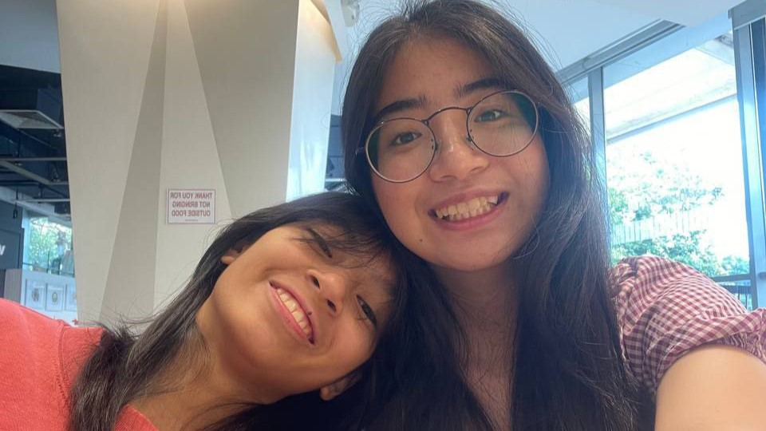
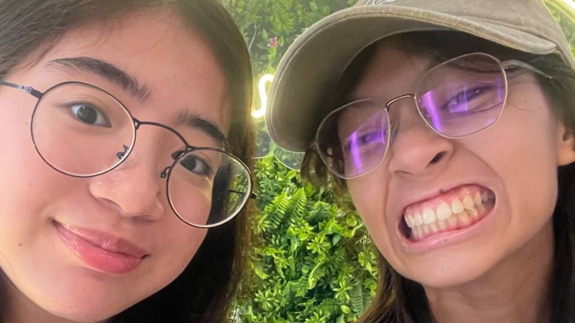
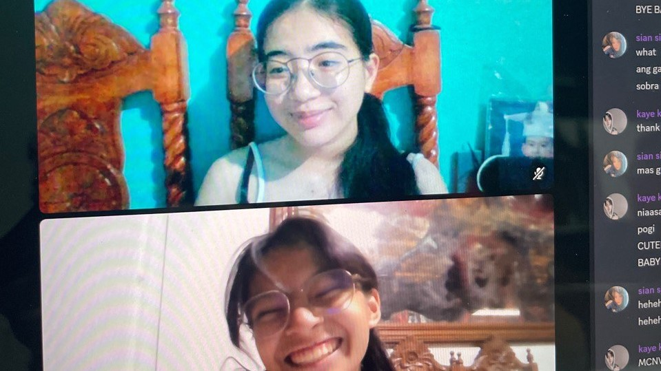
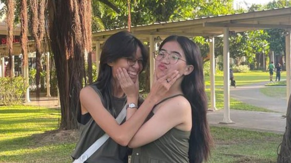
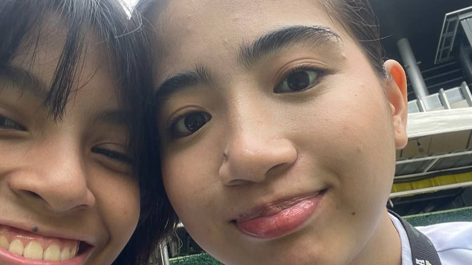
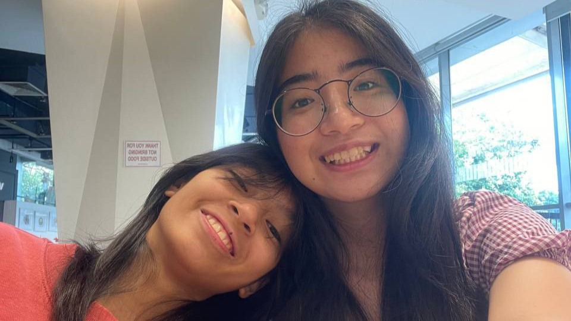
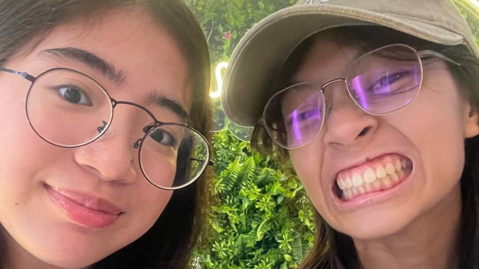
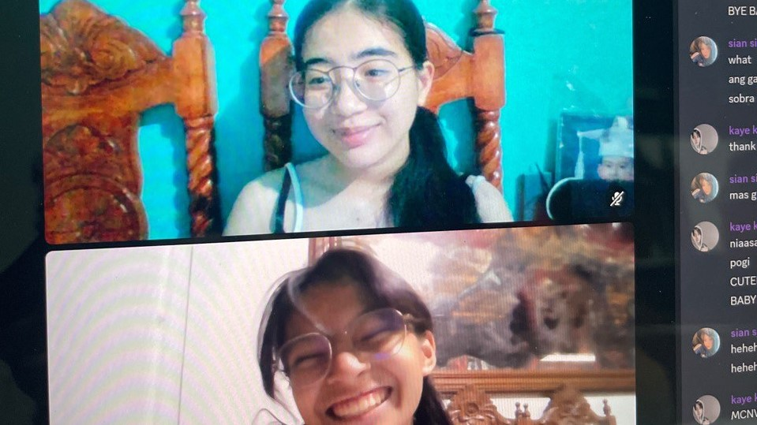
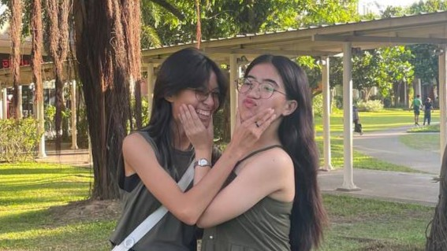
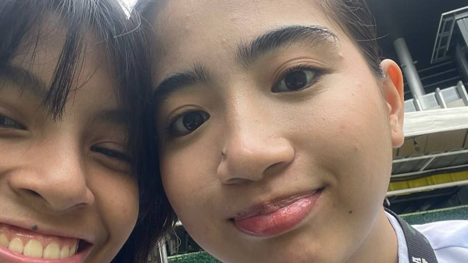

MEMORIES
Here are our dates throughout the whole year, love. Thank you for staying with me.
(Click on the pictures, please!)
A LETTER
hi, kayel!
thank you so much for the 365 days with you, love.
i know we have a long way to go in terms of maturity, how to deal with our tampuhans, and more, pero i’m so happy with our progress! i know minsan (super dalang) nagkakasakitan na tayo, kaya i’m so grateful na you choose to stay, love. i know may mga pagkukulang ako, and sometimes i don’t know how to work on them kaya i ask for your patience and understanding. i know we’re both doing our best for each other kaya alam ko rin na kaya natin ‘to hanggang dulo :D masaya akong kasama kita sa lahat ng pagsubok na dumarating. you keep me strong, mahal, and i’m sure na when i’m weak, you’ll try to be strong for me. though, i hope you don’t put me first lagi ha? when you also feel the same, sana magsabi ka rin para we can be strong for each other :) i know na we’ll both do whatever we can to support each other. hingi rin tayo ng tulong kay God when it’s all too much for us to handle by ourselves na.
sobrang grateful ako kay God kasi binigay ka niya sa akin or pinakilala ka niya sa akin. He knows what i need and what i want, and you’re both. you show me what love is, and you give me the best kind of love there is.
thank you for showing and giving me the kind of love that i deserve. ganito pala feeling when we center our relationship kay God 'no? sobrang light lang and i honestly see our future together.
hinihiling ko talaga na sana magkatotoo at sana tayo hanggang dulo kasi, mahal, ikaw ang gusto ko makatuluyan sa habambuhay. gusto ko makasama ka sa lahat ng oras, lahat ng araw, lahat ng taon, lahat ng pagkakataon, kahit patay na tayo.
i know we're still young, and we're still learning what love is pero i feel like i'm feeling the true meaning of love sa 'yo, and that's how you make me feel too. we complement each other so good, kahit na ang dami nating differences.
you're my home away from home. you're my comfort, and i know na pwede kong sabihin sa 'yo lahat and i'll receive no judgement. you're such a wonderful person, and i'm so happy na ako pinili mong maging jowa. thank you for choosing me everyday, love.
mahal na mahal na mahal kita. naalala mo yung time na shinare mo sa akin yung mabigat na nangyari sa 'yo tas sabi mo na baka hindi na kita gusto? baby, i want you so much. sa tingin ko pa nga na that made me love you more.
you're so brave for telling that to me, alam kong that took a lot of courage. thank you for trusting me, love. i hope you know na nandito ako palagi para sa 'yo. you can trust me with anything kasi it's never my intention to hurt you.
i love you so much, kaye. hangang-hanga ako sa 'yo. i'm sorry kasi 'di pa tapos 'to. update ko na lang next time hehe. here's to many more firsts with you :) happy anniversary, my kayelyelie!
love, sian
 








